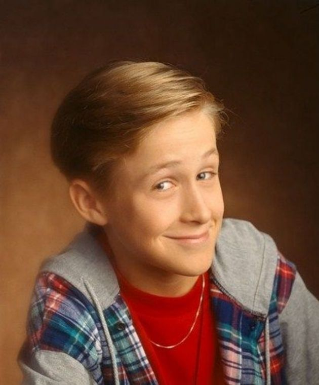

Born Ryan Thomas Gosling on November 12, 1980, in London, Ontario, Canada, he is the son of Donna (Wilson), a secretary, and Thomas Ray Gosling, a traveling salesman. Ryan was the second of their two children, with an older sister, Mandi. His ancestry is French-Canadian, as well as English, Scottish, and Irish. The Gosling family moved to Cornwall, Ontario, where Ryan grew up and was home-schooled by his mother. He also attended Gladstone Public School, Cornwall Collegiate, and Vocational High School in Cornwall, where he excelled in Drama and Fine Arts. The family then relocated to Burlington, Ontario, where Ryan attended Lester B. Pearson High School.
Ryan first performed as a singer at talent contests with Mandi. He attended an open audition in Montreal for the TV series "The Mickey Mouse Club" (The All New Mickey Mouse Club (1989)) in January 1993 and beat out 17,000 other aspiring actors for a a spot on the show. While appearing on "MMC" for two years, he lived with co-star Justin Timberlake's family.Though he received no formal acting training, after "MMC," Gosling segued into an acting career, appearing on the TV series Young Hercules (1998) and Breaker High (1997), as well as the films The Slaughter Rule (2002), Murder by Numbers (2002), and Remember the Titans (2000). He first attracted serious critical attention with his performance as the Jewish neo-Nazi in the controversial film The Believer (2001), which won the Grand Jury Prize at the 2001 Sundance Film Festival.
After appearing in the sleeper The Notebook (2004) in 2004, Gosling won the dubious honor of being named one of the 50 Hottest Bachelors by People Magazine. More significantly, he was named the Male Star of Tomorrow at the 2004 Show West convention of movie exhibitors.Gosling reached a summit of his profession with his performance in Half Nelson (2006), which garnered him an Academy Award nomination as Best Actor. In a short time, he has established himself as one of the finest actors of his generation. Throughout the subsequent decade, he has become all three of an internet fixation, a box office star, and a critical darling, having headlined Blue Valentine (2010), Crazy, Stupid, Love. (2011), Drive (2011), The Ides of March (2011), The Place Beyond the Pines (2012), The Nice Guys (2016), and La La Land (2016). In 2017, he starred in the long-awaited science fiction sequel Blade Runner 2049 (2017), with Harrison Ford.